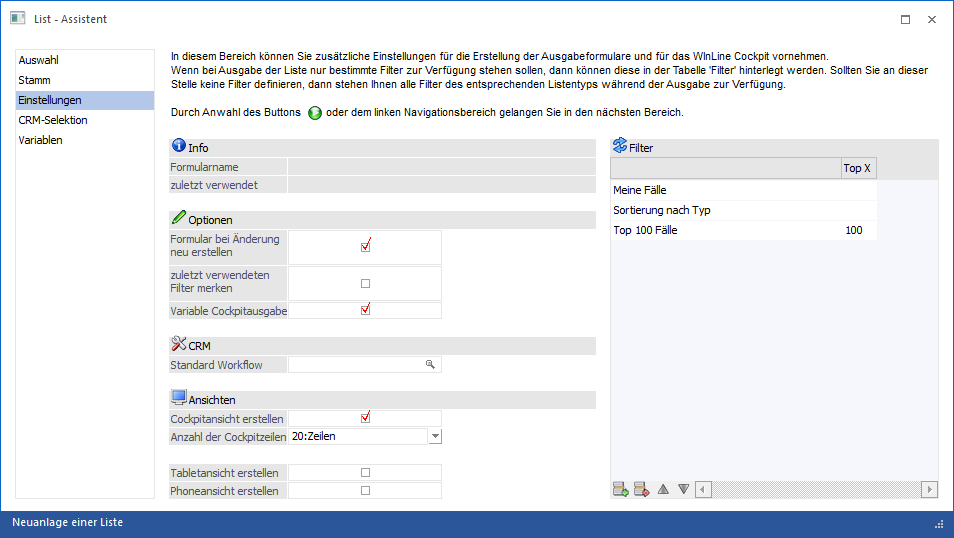
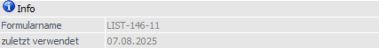
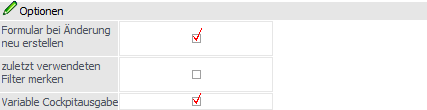
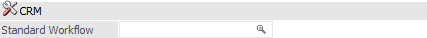
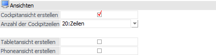
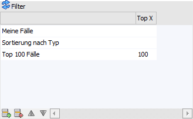
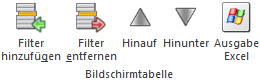

Im Bereich "Einstellungen" können verschiedene Optionen definiert werden, wobei im oberen Bereich noch weitere Informationen angezeigt werden.

Info

Ø Formularname
Dieses Feld wird automatisch vom Programm gefüllt, sobald die Liste einmal gespeichert wurde. Dabei wird anzeigt, unter welche Namen das Formular für die Ausgabe der Liste erzeugt wird. Ggf. kann dieses Formular auch manuell verändert werden.
Ø zuletzt verwendet
In diesem Feld wird angezeigt, wann die Liste zuletzt ausgegeben wurde. Bei einer Neuanlage einer Liste bleibt das Feld leer, bis die Ausgabe einmal durchgeführt wurde.
Optionen

Ø Formular bei Änderung neu erstellen
Ist diese Checkbox deaktiviert, so wird bei einer Änderung der Liste das Ausgabeformular nicht neu erstellt. Dadurch kann verhindert werden, dass ein angepasstes Formular durch eine Änderung der Liste überschrieben wird.
Ø zuletzt verwendeten Filter merken
Mit Hilfe dieser Option kann definiert werden, ob der zuletzt verwendete Filter in die Stammdaten der Liste als Standard-Filter zurückgeschrieben werden soll oder nicht. Der Filter selbst kann u.a. über das "CRM Daten Cockpit" oder im "WinLine Cockpit" abweichend vom Standard gewählt bzw. hinterlegt werden.
Ø Variable Cockpitausgabe
Je nach Einbau kann eine WinLine LIST-Liste über die Anwahl einer Kachel oder über die Funktion "in WinLine anzeigen" aus dem Cockpit heraus aufgerufen werden. Durch Aktivieren dieser Option wird dabei zusätzlich das Fenster List - Ausgabe gestartet, welches die Ausgabe in weitere Formate ermöglicht.
CRM

Ø Standard Workflow
Hier kann ein Workflow hinterlegt werden, welcher bei der Ausgabe des CRM-Kalenders angestoßen wird, wenn auf einen Bereich ohne Eintrag (linke Maustaste) geklickt wird. Über die rechte Maustaste stehen bis zu 15 Workflows zur Verfügung. Es werden aber nur jene angezeigt, die im Workflow-Editor das Kennzeichen für Kalender gesetzt haben.
Hinweis
Standard-Workflows können nur für CRM-Listen eingetragen werden.
Ansichten

Ø Cockpitansicht erstellen
Durch Anwahl dieser Option wird für die Liste eine sogenannte "Cockpit-Ansicht" erzeugt. Diese ermöglich die direkte Darstellung der Liste samt Inhalt im WinLine Cockpit (WinLine START bzw. WinLine INFO).
Hinweis
Der Inhalt der Cockpit-Ansicht wird über die Spalte "Cockpit" im Bereich Variablen definiert.
Ø Anzahl der Cockpitzeilen
Da es im Cockpit keinen Sinn macht, eine komplette Liste mit 100ten Zeilen auszugeben, kann aus der Auswahllistbox eine max. Anzahl von Zeilen gewählt werden, die im Cockpit dargestellt werden sollen. Zur Auswahl stehen 0, 3, 5, 10, 20, 50 oder 99 Zeilen. Wenn die Option "00 - Zeilen" verwendet wird, dann kann die Liste ohne Inhalt im Cockpit angezeigt werden - die Daten werden dann erst durch einen Klick auf die Liste dargestellt.
Ø Tabletansicht erstellen
Wird diese Option gesetzt, so kann im Bereich "Variablen" definiert werden, welche Variablen in der Tabletansicht angezeigt werden sollen.
Ø Phoneansicht erstellen
Wird diese Option gesetzt, so kann im Bereich "Variablen" definiert werden, welche Variablen in der Phoneansicht angezeigt werden sollen.
Filter

Pro Liste können beliebig viele Filter angelegt werden, um ggfs. mit einer Liste unterschiedliche Ergebnisse zu erzielen. Dabei sind die Filter aber nicht auf eine Liste beschränkt, d.h. jeder Filter könnte bei jeder Liste des gleichen Typs verwendet werden. Dadurch könnte es aber auch dazu kommen, dass ein Filter verwendet wird, der dann nicht zum gewünschten Ergebnis führt. Daher kann pro Liste hinterlegt werden, welche Filter für die Liste verwendet werden dürfen.
In der Tabelle können nun jene Filter hinterlegt werden, welche für die Liste angewendet werden dürfen (sind in der Tabelle keine Filter hinterlegt, so können alle verwendet werden). Durch Anklicken des Buttons "Filter hinzufügen" wird das Fenster "Filter - Matchcode" geöffnet, über welches die Filter gewählt werden können.
Nach der Übernahme eines Filters (Taste F5 im Matchcode oder Auswahl des Filters per Doppelklick) wird dieser in die Tabelle "Filter" übernommen. Dadurch wir der Name und eine ggfs. vorhandene "Top X"-Einschränkung angezeigt.
Tabellenbuttons

Ø Filter hinzufügen
Durch Anwahl dieses Buttons können Filter - mit Hilfe des "Filter - Matchcode" - hinzugefügt werden.
Ø Filter entfernen
Mit Hilfe dieses Buttons wird der aktuell gewählt Filter aus der Tabelle entfernt.
Ø Hinauf / Hinunter
Durch Anwahl dieser Buttons kann die Reihenfolge der Filter angepasst werden.
Ø Ausgabe Excel
Durch Anwahl des Buttons "Ausgabe Excel" wird der Inhalt der Tabelle an Microsoft Excel übergeben.